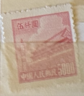
| SOURCE | TITLE| IMAGE MATCH | click to source page |
| eBay | 1950 china Tiananmen $5000 (printed Ed Unknown) | eBay |  |
| eBay | China (PR) #94 used | eBay |  |
| DealBid | Ending Soon Listings in Stamps > Asia > China - 80 items per page - Ending Soon | DealBid | 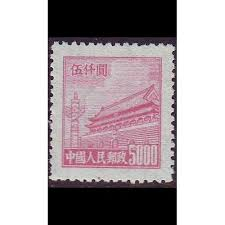 |
| eBay UK | Used 8 Number Chinese Stamps for sale | eBay UK | 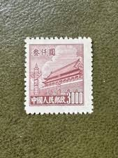 |
| eBay UK | Hinge Remaining Chinese Stamps for sale | eBay UK | 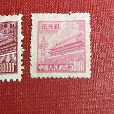 |
| Shutterstock | 2+ Thousand 5000 Dollar Royalty-Free Images, Stock Photos & Pictures | Shutterstock | 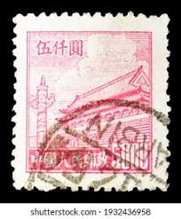 |
| Alamy | Chinese stamp china collection hi-res stock photography and images - Alamy | 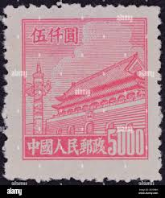 |
| PicClick UK | RARE , CHINA Stamp 20.000 Gate Of Heavenly Peace 1950, £1.00 - PicClick UK | 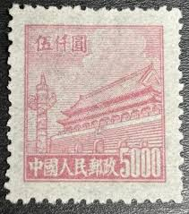 |
| HipStamp | China P.R.C. #69 Used - Stamp - CAT VALUE $3.25 | Asia - China, General Issue Stamp / HipStamp | 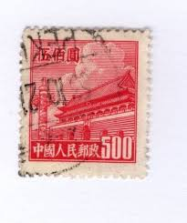 |
| HipStamp | People's Republic of China 1951 Sc 93 Gate of Heavenly Peace Block/4 Stamp MNH | Asia - China, General Issue Stamp / HipStamp |  |
| Mystic Stamp | 99 - 1951 China, People's Republic of - Mystic Stamp Company | 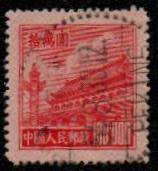 |
| eBay | PRC China, 1950, sc#18, Mint, NH, NGAI, 1st Series | eBay | 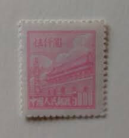 |
| eBay | China (Peoples Republic) #18 used | eBay | 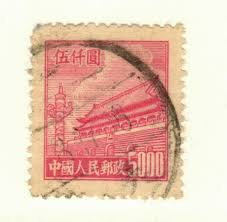 |
| carousell.ph | heaven gate - View all heaven gate ads in Carousell Philippines | 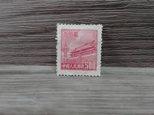 |
| eBay | People's Republic of China Scott #94 Used | eBay |  |
| eBay UK | PRC China Stamps, 1950, sc#89, Mint, NH, NGAI, Block of 4, | eBay UK | 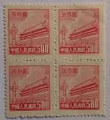 |
| Xabusiness.com | RN2 Regular Stamps with Design of Tian An Men (For Use in the Northeast, 2nd Print) - China Stamps | 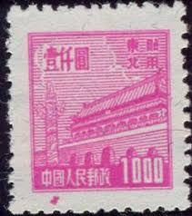 |
| eBay | PRC China Stamps: 1950-1 4th Heavenly Gate $5000 Pink, SC 94 Block of 12 MNH | eBay | 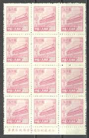 |
| eBay | Uncertified Red Chinese Stamps for sale | eBay | 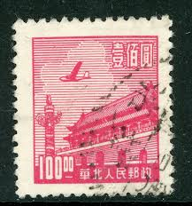 |
| WorthPoint | North East China (People's Post) Stamps (1946 - 1950) - Guide to Value, Marks, History | WorthPoint Dictionary |  |
| Find Your Stamps Value | NORTHEAST CHINA: Gate of Heavenly Peace - 中国东北: 东北贴用: 天安门$20000 Deep brown stamp price, value |  |
| eBay | 1950 P.R.China, 5,000y Pink 1st Gate (R1), MNH, Rough Perf., Scott #18. | eBay | 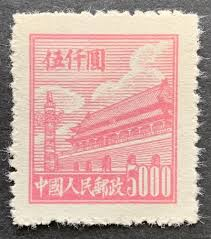 |
| eBay | PR China 1950 Second Issue $3000 MNG A19P57F505 | eBay | 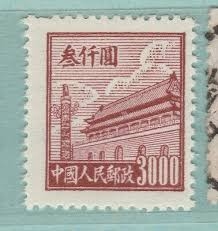 |
| eBay | China (PR) Northeast China #1L165 MNG | eBay | 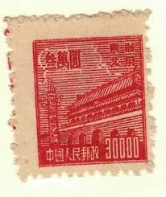 |
| lastdodo.com | Stamps from China - People's Republic Stamp catalogue - LastDodo | 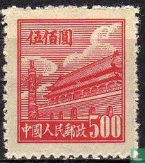 |
| eBay | $500 Gate of Heavenly Peace ~ SC#14 A5 ~ 3 Used Stamps ~ China | eBay | 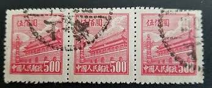 |
| eBay | China (PRC) 22 MNG | eBay | 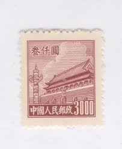 |
| eBay | $3000 Gate of Heavenly Peace SC#93 A13 ~ China Post No R4 ~ Used | eBay | 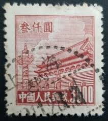 |
| eBay | China - Northeast China - 1950 Tiananmen - Gate of Heavenly Peace - 500 | eBay | 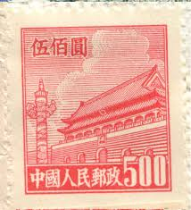 |
| eBay | Peoples Republic of China Scott # 22 VF MNH 1950 Gate of Heavenly Peace Block | eBay | 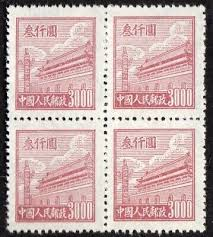 |
| eBay | PRC China Tien An Men block of 6 R4 MNH extra fiber on Pre-Printing Paper | eBay | 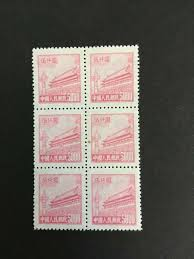 |
| Dreamstime.com | 2,241 Peace Stamp Stock Photos - Free & Royalty-Free Stock Photos from Dreamstime | 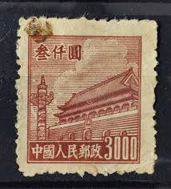 |
| us-china-stamps.com | J.HB China stamps Liberate Areas of North China: J.HB-59 J.HB-63 J.HB-64 J.HB-67 J.HB-68 | 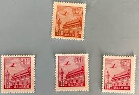 |
| eBay | 1971-1980 Year of Issue Japanese Stamps for sale | eBay | 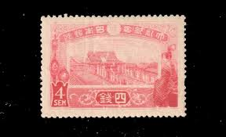 |
| Etsy | Postage Stamps,set of 8 ,gate of Heavenly Peace,pcr,china - Etsy | 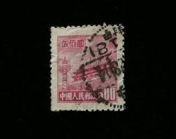 |
| eBay | P.R. China 1950 Scott # #13 Block of 9 Stamps VF MNH MNG as issued | eBay | 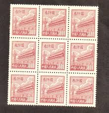 |
| eBay UK | Historical Events Chinese Stamps for sale | eBay UK | 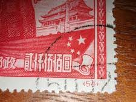 |
| Shutterstock | 3+ Thousand Beijing Stamp Royalty-Free Images, Stock Photos & Pictures | Shutterstock |  |
| eBay | 1950 China, R3, $300/500/800, Tien/Tian An Men, Gate of Heavenly Peace, MNH | eBay | 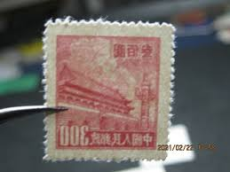 |
| PicClick | PR CHINA R3 Regular Definitive Tian An Men-3rd Print, R5-5th Print, R8 普3,普5,普8 $269.00 - PicClick | 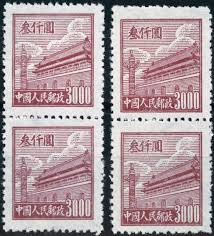 |
| eBay | F/G (Fair/Good) Asian Stamps for sale | eBay | 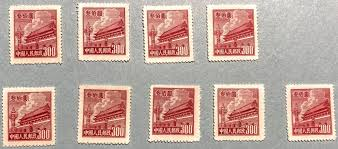 |
| eBay | CHINA, PR - NORTHEAST CHINA 1L172 MINT NO GUM AS ISSUED - VERY FINE! - GNP | eBay | 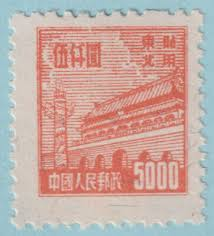 |
| eBay | CHINA PRC SCOTT # 88 PAIR MNH | eBay |  |
| eBay | China Sc 93, R4 $3000, Mint BLK of 6, No Gum as Issued, Fresh Color, Very Fine | eBay |  |
| DealBid | Browse Listings in Stamps > Asia > Taiwan | DealBid | 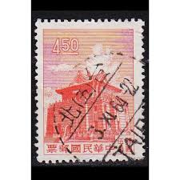 |
| Find Your Stamps Value | PORT ARTHUR AND DAIREN: Gate of Heavenly Peace - 亚瑟港和大连：天安门50y Deep purple stamp price, value |  |
| Carousell | PR China RN2 (12500y), NGAI stamps x1 pc, Hobbies & Toys, Stationery & Craft, Craft Supplies & Tools on Carousell | 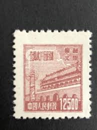 |
| eBay | CHINA PRC 1950 Sc#12-20 R1 Tien An Men Gate. VF, Fresh. | eBay | 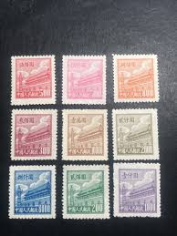 |
| eBay | 1950 China, R3, $300/500/800, Tien/Tian An Men, Gate of Heavenly Peace, MNH | eBay |  |
| eBay | CHINA #IL 1459 Tien-An-Men Gate mint never hinged | eBay | 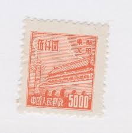 |
| eBay | CHINA PRC 1951 Sc#99 R5 $100000 Tien An Men Gate Postal Used VF,SCV$350 | eBay | 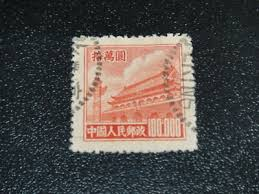 |
| eBay UK | 4 Stamps Used Chinese Stamps for sale | eBay UK | 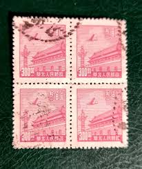 |
| eBay | 1950 CHINA LOT OF 7 STAMPS #94 GATES HEAVENLY PEACE CLOUDS DON'T TOUCH TOP FRAME | eBay | 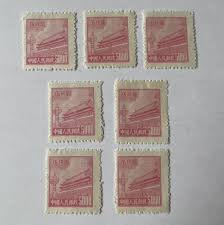 |
| eBay | PRC China Stamp 1951 Sct#99 Tian An Men Definitive ￥100,000 yuan 1PC USED | eBay | 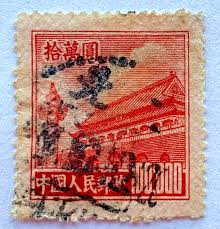 |
| eBay | Yellowstone Stamps | eBay Stores | 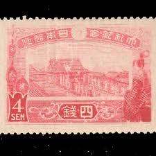 |
| eBay | 1960 taiwan stamps lot A12 | eBay | 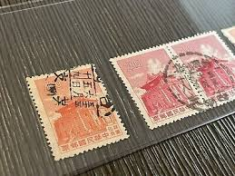 |
| Stamp Auction Network | Kelleher and Rogers Limited Sale - 38 Page 41 | 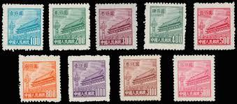 |
| eBay | JAPAN 150 MINT HINGED OG * NO FAULTS EXTRA FINE! - VCX | eBay | 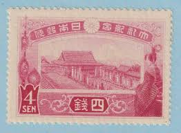 |
| eBay | JAPAN 1937 / STAMP / Scott 244 / Used | eBay Australia | 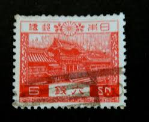 |
| eBay | Taiwan SOTN Postmarks (2023-TW13) 1915 Sakura#C13+Coronation +葫芦墩 CXL +Scarce | eBay | 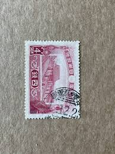 |